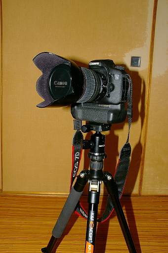
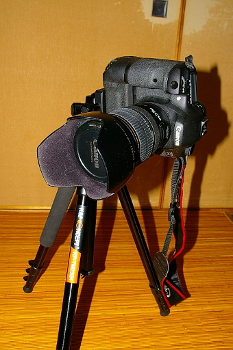
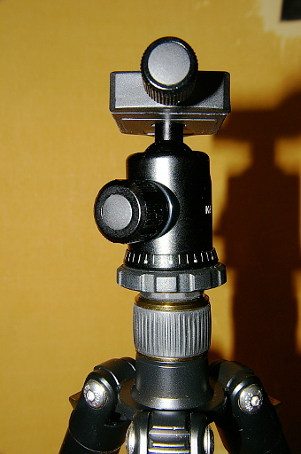
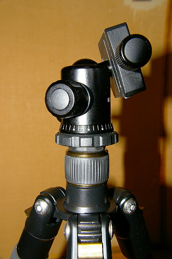

2018 年
09 月 03日 ( 月 )
自由雲台のカタログスペックの不思議
さてみなさんが自由雲台を選ぶときに何を必須の条件としますか？
と馬鹿げた質問で始めてみましたが、当然答えは最大搭載荷重がご自身のカメラを支えるのに十分かどうかですよね。
それでこの最大搭載荷重ですがメーカーによって様々です。2kg なんてのもあれば 30kg なんてかなりの重量に耐えることができそうな雲台もあったりします。ですがこの最大搭載荷重という数字はどういう数字なのでしょうか？私実は混乱しております。
と言いますのはバッテリーパックを取り付けた Canon EOS 7D に Canon EFS 17-55mm を取り付けた状態で手持ちの C&F Concept KF-TM2324 に取り付けたところ下の写真のように普通に固定できています。この三脚の最大搭載荷重はカタログスペック上 10kg なので、まぁ固定されるよなと普通に思いますし実際に固定されます。

ところがですね、D7 を斜めに傾けて固定しようとしたり縦置きに固定しようとするとカメラの重さに雲台が耐えられず下の写真のようにお辞儀してしまうんですよ。カメラとバッテリーパック、レンズ、バッテリー 2 つの合計が約 2kg 強に過ぎないのにですよ？あれれ？10kg まで大丈夫じゃなかったの？と思わずにはいられなかったわけです。

このカタログ上の最大搭載荷重って本当は雲台が下の写真のようにクランプ部分が垂直に立っている状態のときの搭載可能荷重であって

下の写真のようにクランプ部分が斜めや横になっているときの搭載可能荷重って、もっと小さく、それもカタログ上の最大積載荷重の 1/10 未満なんかじゃないかと思わざるを得ないわけです。

すくなくとも C&F Concept KF-TM2324 のカタログスペックに対してはそう考えざるを得ません。

amazon で販売されている多くの雲台が同じように重い荷重に耐えられるかのように書かれているにもかかわらず、やはり多くの雲台のレビューではそんなに重い荷重には耐えられないと数多く報告されています。それからすると私の上記の仮説は当たってるんじゃないかなぁと思えます。
ところがですね、世の中にはカタログスペック上最大搭載荷重 5kg とか 2kg なんかの雲台もあったりするわけです。普通に考えてこれらの雲台が 500g や 200g のようなまるで肉屋で売ってる肉ぐらいの重さしか耐えることができないとはやはり考えにくいですよね。実質耐荷重 200g なんてスマホぐらいしか支えられません。なのに雲台にカメラ用のクイックシューがついていたりします。矛盾してます。
ということから考えられるのは、下の写真の状態での最大積載荷重を載せてる製品と
下の写真の状態での最大積載荷重を載せている製品とが、世の中で混在しているのではないかということです。
どちらのスペック表記が信頼できるのかは一目瞭然ですよね。できればカタログや amazon の記載は後者で統一してほしいものです。GITZO ですらスペックからは実際の実用搭載荷重はわからんのですから。
- Category :
- 日記
- カメラ
- 写真
- 三脚
- 自由雲台